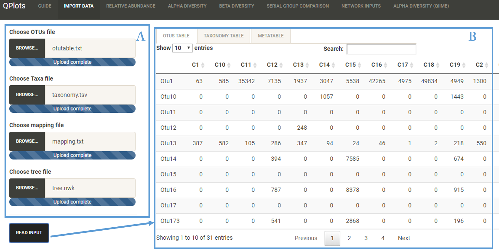

Four input files are needed for all the analysis steps:
- OTU table (.txt): Matrix contains number of read of an OTU per sample also called a "count matrix". Taxon in Rows and samples in columns
- Taxonomy file (.tsv or .txt): Matrix contains asigned taxonomy for each OTU
- Mapping file (.txt): Matrix contains all the informations about the samples. First column with samples ID should match the samples names in OTU table
- Tree: Phylogenetic tree
User Interface

- A: Imported Files
- B: Visualize Files
Demo Data
To test the different steps of the workflow, a dataset generated by 16S rRNA sequencing from Glossina study is available. This study aims to investigate the effect of differents diet on the microbial profile of three Glossina species.
- OTU table (.txt): Count matrix contains 248 samples in columns and 31 OTUs
- Taxonomy file (.tsv): Matrix contains OTUs IDs in the first column and the full taxnomy in the second column
- Mapping file (.txt): Matrix contains samples IDs in rows and five different variables (species, age, sex, tissue and diet)
- Tree: Phylogenetic tree